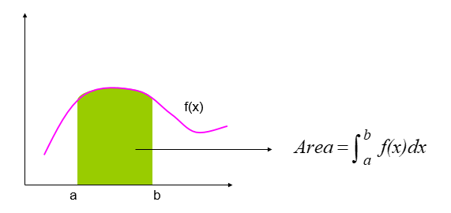
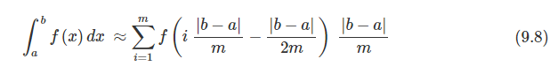
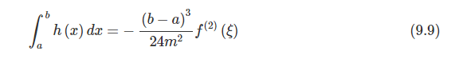
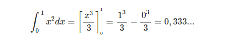
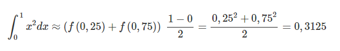
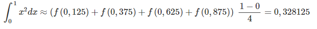
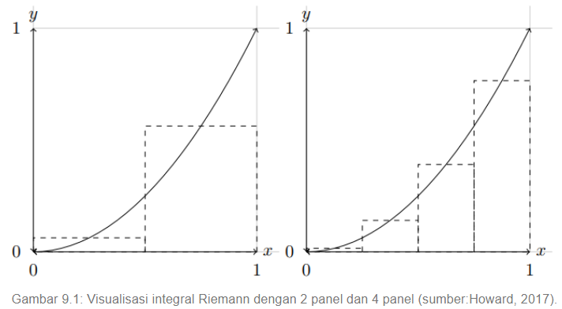
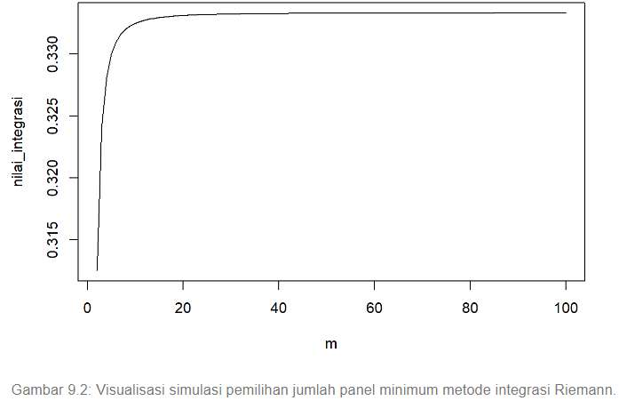

Metode numerik adalah teknik- teknik yang digunakan untuk merumuskan masalah-masalah matematika agar dapat diselesaikan dengan operasi-operasi aritmatika (hitungan) biasa (tambah, kurang, kali, dan bagi). Secara harfiah metode numerik berarti cara berhitung dengan menggunakan angka-angka. Perhitungan ini melibatkan sejumlah besar operasi-operasi hitungan yang berulang-ulang, melelahkan, dan menjemukan.
Integral tak tentu
Integral tak tentu adalah suatu fungsi yang berbeda satu sama lain oleh konstanta
Integral tertentu
Integral tertentu adaah suatu bilangan
konsep Integral Numerik sangat mudah dipahami yakni bagaimana cara mengavaluasi integral dari suatu fungsi:

Ada 4 Metode yang dapat digunakan untuk penyelesaian, seperti: Metode Newton-Cotes, Metode Trapezoid, Metode Romberg, Metode Simpson
Pada metode ini saya menggunakan Metode Newton-Cotes
Metode Newton-Cotes
Metode integrasi Newton-Cotes secara umum merupakan metode integrasi yang dilakukan dengan membagi area di bawah kurva suatu fungsi menjadi beberapa panel dengan terlebih dahulu menetapkan batas atas dan batas bawah interval. Integral atau luas area di bawah kurva ditentukan berdasarkan jumlah luas panel yang digunakan untuk mendekati luas area di bawah kurva.
Terdapat beberapa metode yang akan penulis jelaskan pada sub-Chapter ini. Metode-metode tersebut antara lain: Metode integral Riemann, Metode trapezoida, Metode Simpson 1/3, Metode Simpson 3/8
Pada metode ini saya menggunakan Metode Integral Riemann
Metode Integral Riemann
Metode integral Riemann dilakukan dengan membagi interval di bawah kurva suatu fungsi matematik sebanyak m subinterval sama besar. Pada setiap subinterval dibentuk persegi panjang setinggi kurva pada setiap titik tengah persegi panjang tersebut. Area setiap subinterval diperoleh dengan mengalikan panjang dan lebar masing-masing persegi panjang. Jumlah masing-masing area tersebut digunakan untuk menaksir interval integral suatu fungsi dengan interval tertentu. Fungsi proses integrasi menggunakan metode titik tengah dapat dituliskan pada Persamaan (9.8).
dimana b dan a masing-masing merupakan batas atas dan bawah interval kurva yang hendak dihitung integralnya. Error dari metode ini dapat diestimasi menggunakan Persamaan (9.9).
dimana ξ merupakan nilai antara a dan b .
Contoh 9.2 Hitunglah intergral fungsi di bawah ini menggunakan metode integral Reimann dengan interval 0 sampai 1 dan jumlah panel 2 dan 4!
jawab
Fungsi pada Contoh 9.2 dapat diselesaikan menggunakan metode analitik. Penyelesaian analitik fungsi tersebut adalah sebagai berikut:
Penyelesaian numerik menggunakan metode titik tengah dengan jumlah panel 2 dapat dilakukan dengan menentukan lokasi titik tengah kedua panel. Berdasarkan interval fungsi dapat kita tentukan titik tengah kedua panel berada pada x=0,25 dan x=0,75 . Perhitungan dilakukan seperti berikut:
Untuk meningkatkan akurasi dari nilai yang dihasilkan, jumlah panel dapat ditingkatkan. Untuk jumlah panel 4, titik tengah berada pada x={0,125;0,375;0,625;0,875} .
Visualisasi proses integrasi dengan metode Riemann dapat dilihat pada Gambar 9.1.
Berdasarkan Persamaan (9.8), kita dapat mengembangkan fungsi R yang dapat digunakan untuk melakukan perhitungan integral Riemann. Sintaks fungsi tersebut adalah sebagai berikut:
Berdasarkan teori yang telah dipaparkan sebelumnya, kita ketahui bahwa untuk memperoleh nilai pendekatan integral yang sebenarnya kita dapat meningkatkan jumlah panel yang digunakan. Untuk mengetahui jumlah panel minimum yang diperlukan untuk memperoleh hasil integrasi yang stabil, kita akan melakukan simulasi menggunakan data yang disajikan pada Contoh 9.2 dengan memvariasikan jumlah panel yang akan digunakan. Pada simulasi yang akan dilakukan kita akan coba memvariasikan jumlah panel dari 2 hingga 100. Berikut adalah sintaks yang digunakan:
Berdasarkan hasil simulasi dapat disimpulkan jumlah panel minimum yang diperlukan untuk memperoleh hasil integrasi yang stabil kira-kira sebesar m=40 .